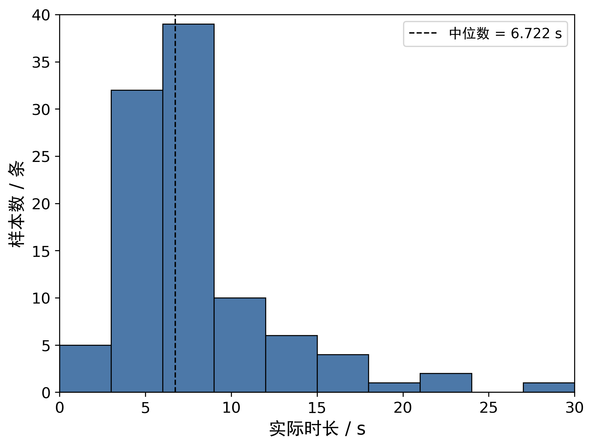
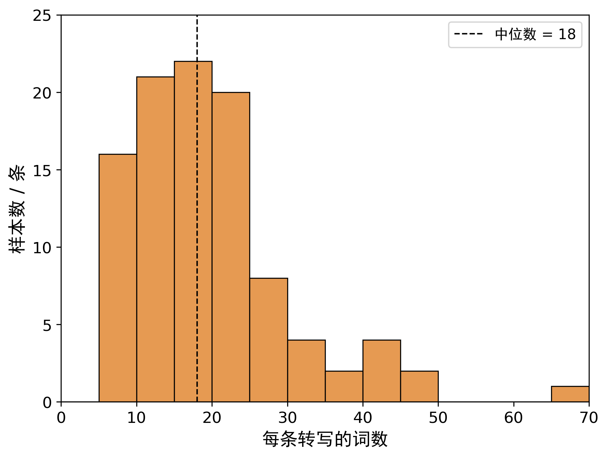
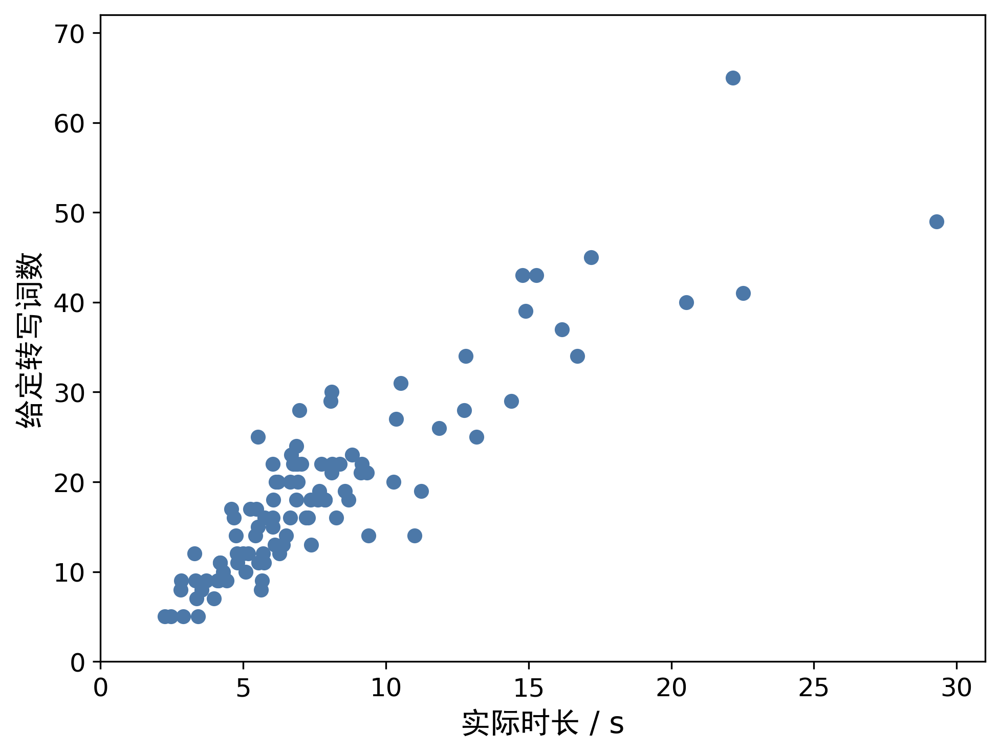
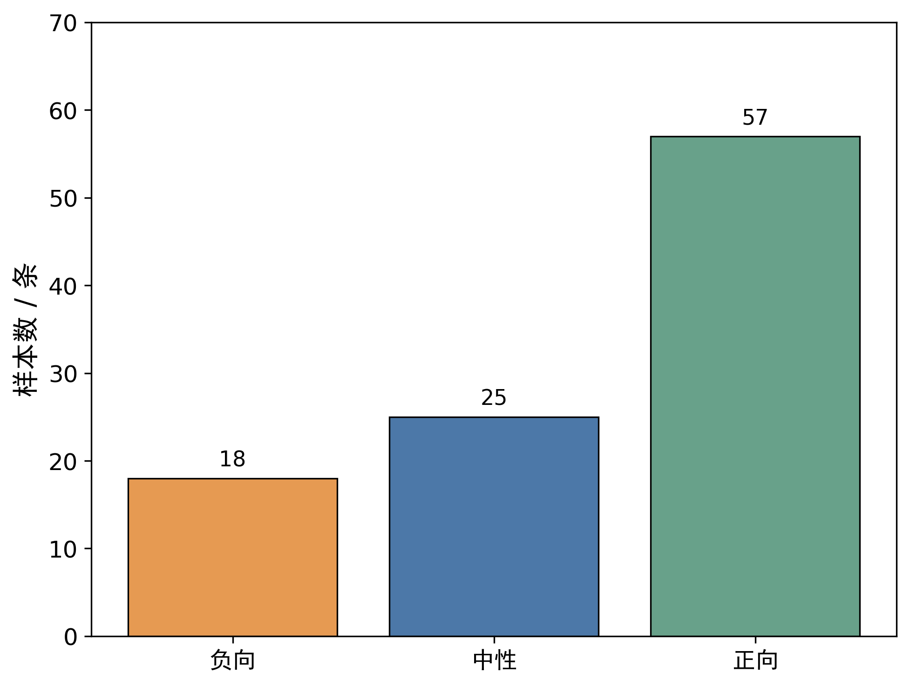

问题一：数据观察与预处理
四张独立统计图、一张画面示例总图与一张可选声画图。统计图的标题由 LaTeX 分别排版；全部图像来自原始视频、原始标签表与已核对的统计记录。
正文 LaTeX · 可选图 LaTeX

视频片段时长分布。PDF · SVG

给定英文转写的词数分布。PDF · SVG

视频片段时长与给定转写词数的联合分布。PDF · SVG

样本情感类别构成。PDF · SVG
原始画面实例：编号和时间置于框外，给定转写置于浅色文本框内。仅展示中点附近的一帧，不代表整段场景分布。PDF · SVG
可选补充图：预处理后的声画时间记录，未展示词级对齐。PDF · SVG